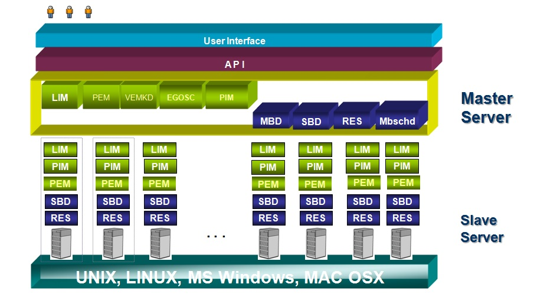

<div ui-content-for="title">
    <span>Linux C</span>
</div>
<div class="scrollable">
    <div class="scrollable-content">
        <div class='section'>
            <div id="LSFHeader">
                <div id="LSFBasicInfo">
                    <h4>Basic Information: </h4>
                    <h5><strong>Name:</strong> LSF</h5>
                    <h5><strong>Platform:</strong> Linux, Windows, UNIX</h5>
                    <h5><strong>Language:</strong> Linux C</h5>
                    <h5><strong>Development Tool:</strong> gcc, g++, gdb, Source Insight</h5>
                    <h5><strong>Functionsalities:</strong> </h5>
                    <ol>
                        <li>Connects computers into a Cluster (or “Grid”)</li>
                        <li>Monitors loads of systems</li>
                        <li>Distributes, schedules and balances workload</li>
                        <li>Controls access and load by policies</li>
                        <li>Analyzes the workload</li>
                        <li>High Performance Computing (HPC) environment</li>
                    </ol>
                </div>
                <div id="LSFInfraPic">
                    <a href="images/LSFInfrastructure.jpg" target="_blank">
                        
                    </a>
                </div>
            </div>

            <div id="LSFBody">
            </div>
        </div>
    </div>
</div>
